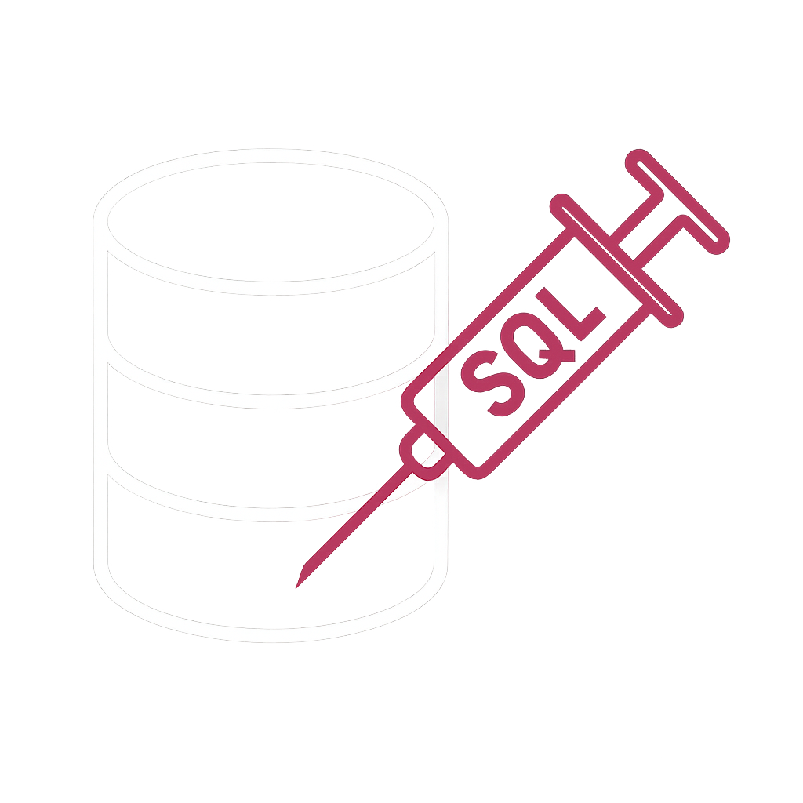

SQL-инъекция
SQL-инъекция — это тип уязвимости, при котором злоумышленник внедряет вредоносные SQL-команды в запросы приложения. Это может привести к несанкционированному доступу к базе данных, утечке или уничтожению информации.
Виды SQL-инъекций
- Классическая инъекция — простой ввод вредоносного SQL-кода в текстовые поля или URL;
- Слепая (Blind SQL Injection) — не выводит ошибки напрямую, атакующий получает информацию косвенно (по времени отклика или ответам);
- Union-based инъекция — использует оператор UNION для объединения результатов нескольких запросов;
- Error-based инъекция — использует сообщения об ошибках для извлечения данных.
Пример простой SQL-инъекции
Предположим, существует уязвимая форма входа:
SELECT * FROM users WHERE username = '$username' AND password = '$password';
Злоумышленник вводит в поле логина:
admin' --
SQL-запрос превращается в:
SELECT * FROM users WHERE username = 'admin' --' AND password = '';
Пароль игнорируется, и злоумышленник получает доступ как администратор.
Как защититься от SQL-инъекций?
- Использовать подготовленные запросы (Prepared Statements);
- Валидировать и экранировать входные данные пользователя;
- Ограничить права доступа к базе данных для веб-приложения;
- Регулярно обновлять ПО и проводить аудиты безопасности.